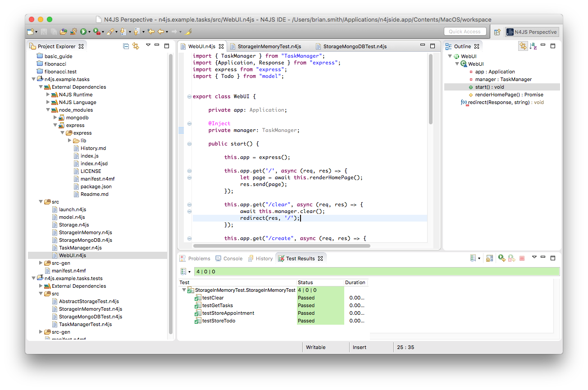

High-quality JavaScript development
for large Node.js projects

for large Node.js projects
N4JS is a general-purpose programming language based on ECMAScript Version 5, and ECMAScript 2015 is supported to a great extent. It adds a static type system as reliable as that of Java 8, but with the flexibility of JavaScript. The language provides built-in support for state-of-the-art programming paradigms such as dependency injection and test support. The feature-rich, Eclipse-based IDE for N4JS is custom-built for precisely these concepts. Code is validated as you type with the addition of tools such as content-assist and quick-fixes which ensure your code is written safely and intuitively.
N4JS transpiles to V8-compatible ECMAScript code, using features available as of Node.js version 5. The transpiled modules can be used with System.js or Common.js module loader.
@Test, @Ignore, etc.The Eclipse N4JS project is in the Incubation Phase and there is no official release available yet (for unofficial releases see the download page). This doesn't mean that N4JS is unstable; we have an extensive test suite (>90.000 tests) to ensure a stable nightly build and N4JS has been in use in several large non-public projects for years. There still may be bugs (there are always bugs) and features which are under development. We encourage feedback from all users! You can ask questions about getting started with using the N4JS Language and IDE for developing your own projects at the forum or you can create bug reports and feature requests using GitHub issues at the official Eclipse repository for N4JS. Note that it's also possible to write and submit bug reports from within the N4JS IDE itself.